Software Design/Engineering (Narrative)
About the Project
This artifact is a web application that provides employees at an animal shelter with an interface to query and view animals within their database.
This interface was comprised of three aspects, a list component that displayed specific entries, a pie chart that would display some analytic information, and a map that utilizes the geolocation data in the database.
The user is capable of sorting and filtering data from the interface.
This would enable the user to find specific information that they would need to complete their tasks of some sort. For more details and direct access to files about this project go here.

Image of the new Dashboard
Purpose
This item was chosen because the initial project is a small-scale full-scale stack application.
Full-stack development requires a board sense of knowledge and skills to properly integrate the different programs and software layers for a functioning application.
The
base project has two Python-based files and a Mongo database that it interfaces with. Unfortunately,
in the private repository hosting the old project, I forgot to include the data. This time included the data file in the project.
The project is very monolithic in its structure. There is a file that handles base CRUD operations, and a second file that handles everything else.
The
improved version of the project separate the large file into many components.
I accomplished this by utilizing the MEAN stack.
The software suite includes MongoDB, Express, Angular, and Node.js. All javascript language based software.
By pivoting, I can utilize a flexible and widely supported framework to create an equivalent front-end while reducing potential technical debt.
The design files are easier to comprehend by splitting the functionality and types to proper folders/file structure
(CSS, HTML, Angular components, Data files, Express, and the App Api components).
Express enables me to create CRUD operations and route API calls that the web application will rely on to supply the interface with data.
These calls are possible by Cross Origin Resource Sharing.
Next, the Angular front-end is responsible for making RESTful API calls to the express server and populating the components with data.
I shifted the front-end components of the map and the chart to the side of the list. This fits better overall as
screens tend to have more width than height.
I’ve also incorporated security middleware that prevents unauthorized modification of the database.
A user must be logged in before being able to add, edit, and or delete database documents.
This modification is implemented with
JSON web tokens.
Lastly, I wanted to integrate security by design. Besides the middleware, the database is built by the project to populate it with a
defined schema. There is a script that loads the data adhering to the schema into the database. As a verified user makes changes to the collection, the forms have validators incorporated into the page. Lastly, I
shifted to server sided pagination for get calls. However, this is explained more in the database section.
Reflection
The process of reconstructing an artifact, but a different software stack is somewhat disorienting.
While I have the direction and similar goals, knowing how to implement tools to meet said goals take some time.
The MEAN stack is, as I said many times, very flexible and widely supported, so finding the right tools to use as components in this application requires some comparison.
I do not want to use one tool because I am comfortable with it, I’d rather use a tool that is better suited for the task at hand.
I ended up settling with Mat-Data-Tables, leaflet for the map, and CanvasJS for the data chart.
However, this is a daunting process of Trial and Error. Inevitably, I spent much of time trying different components and reading documentation to find the better match for the application.
I’ve run into many problems in development concerning component functionality, data conversion, routing capabilities, and capability between components. My inexperience with some of the tools and dependencies caused many of these issues.
In the end, this is a way to improve my own skills and knowledge while executing my enhancements.
As stated earlier, by separating the components into a reasonable size and structure, I can manage the differing aspects more easily.
For comparison, the previous design in total had two modules and a database to interface with, but this new design has separated the aspects of data handling/api, HTML, CSS, database, and angular and express components into many files.
There is more control and more space to extend the functionality of the web application in the future.
How To
Dependencies
This project relies on the MEAN stack, so installation of each is integral to operation. The versions used in this project are:
- Angular/cli@22.1.2
- bootstrap@5.3.8
- express-generator@4.16.1
- jquery@4.0.0
- node 24.14.0
- npm 12.12.1
- postman or a tool to craft http calls.
Instructions
- After downloading the files, there is still some configuration to be made to run locally.
While having the necessary services running.
Navigate to the project's root folder in a terminal.
The first thing to do is to seed the database. This is done by running the script: node .\app_server\models\seed .
Next is to configure the .env file. If not present, create the file in the root directory and add the line "JWT_Secret=yoursecretcodehere".
This is for creating a token for the security middleware.
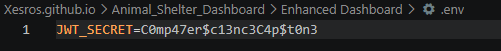
.env config
Add users with postman by loading a post request to http://localhost:3000/api/register follow the user schema.
If you are unsure if the changes are working, test with postman to the routes http://localhost:3000/api/login .
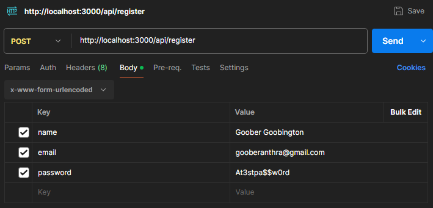
Postman Register Call
- With data loaded and the user registered, start the express server by navigating to the root folder and enter 'npm start'.
This will initial the backend for data routing and handle api calls between the frontend and the database.
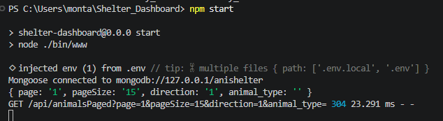
start express server
In a separate terminal window, navigate to the root folder and enter the app_admin folder.
Here enter 'ng serve' to build and run the angular frontend.
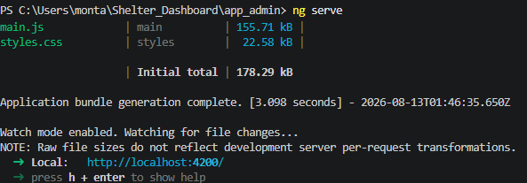
start angular front-end
- Now in your web browser, navigate to http://localhost:4200/. This is for local hosting, otherwise the application can be configured to on a different address.
At this point you will see the main dashboard.
There should already be entries loaded into the list as on start up the app calls for data.
Without logging in, you are capable of reading data.
Shelter Homepage
- Click log in near the top left of the screen and enter your credentials.
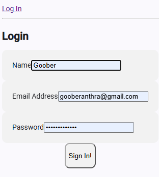
Log in component.
When logged in you are now capable of creating entries, editing entries, and deleting entries.
These components/funcitonality are hidden until the user logs in.
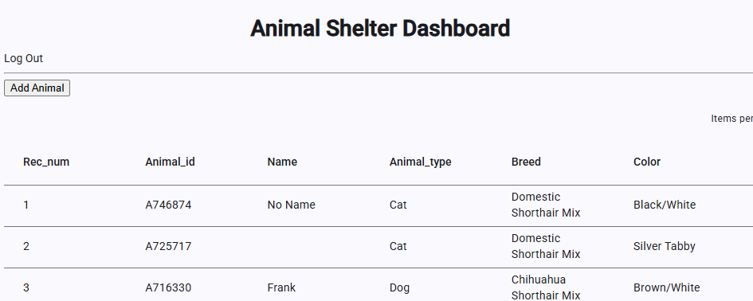
Exposes the add animal button and extends functionality.
- Click on add animal to create a new entry. Be sure to fill all data entries.
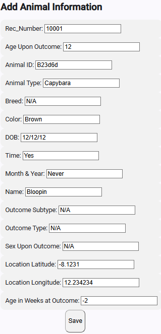
Add Animal Form
Navigate to your entry with the paginator on the top right of the list to get to the end.
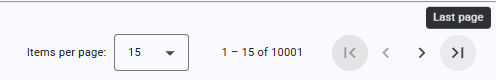
Paginator
Here is our example entry.
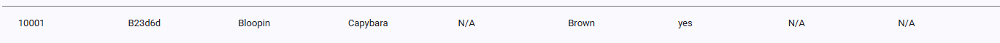
New Entry.
- As a logged in user, you can click on entries to access the edit and delete page.
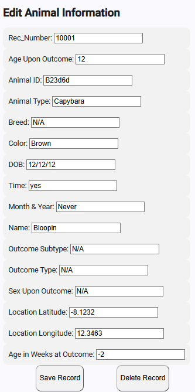
Edit Animal Form
This allows you to change data of document present in the database.
Hit save to save changes or delete to remove the document from the collection.
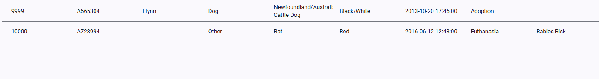
Entry Deleted.
-
[Note] Sometimes, the login may bug out UI wise. Clicking the log in button again should refresh the page state.
-
As you navigate through the pages, the map will automatically update to load the location on it as markers.
You can zoom in and out. You can also move the map around.
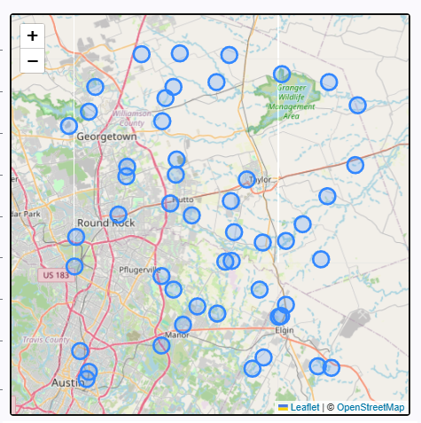
Markers on Map